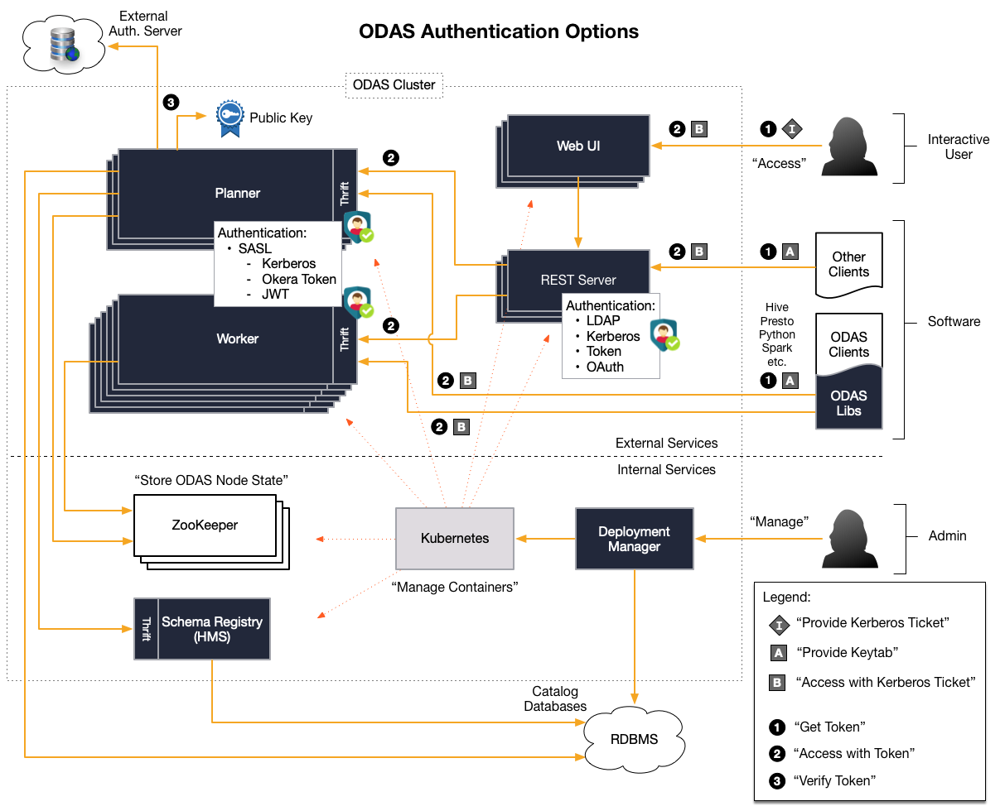

ODAS Planner Services Integration - Best Practices
Please see the Okera Catalog Overview and ODAS Overview documentation for more details on the Okera services.
Goals and Intended Audience
This document describes the best practices for integrating the Okera Data Access Service (ODAS), and specifically the integrated Catalog sub-services, into non-Okera-provided clients, such as commercial, enterprise-wide business metadata systems. The content of this document is best suited for technical architects and developers.
Introduction
ODAS is a distributed data access framework that consists of a handful of sub-services, including the ODAS Planner. This sub-service is responsible for taking on requests from clients before they access the data itself. The Planner parses the client request and returns the appropriate results, which can range from Catalog metadata, such as a list of datasets or table schemas, to query processing plans.
Since all ODAS sub-services are protected by industry-standard security mechanisms, it is paramount for all clients to provide sufficient credentials for every request, or else the request is rejected. There are multiple ways of communicating with the Planner service, and depending on the selected option, the choices of authentication vary. The available communication choices are:
- REST API
- Java API
- Python API
They are discussed separately in the next sections.
For more information, the Authentication documentation provides the details about the supported authentication choices for each of these APIs, which are summarized in the diagram below. You may also note that the actual Catalog sub-service is not directly accessible for clients, but through the Planner service only.

As shown in the diagram, the internal API of the Planner service is Thrift based, and the REST, Java, and Python APIs use that native API. In other words, all client APIs are wrappers around the Thrift client libraries and a higher-level, easier-to-use abstraction. Implementing a Thrift client is inherently difficult and for that reason it is not recommended to use the Thrift API directly, but one of the available abstractions. As a way to enforce this, the Thrift descriptor file is not publicly exposed.
Access Options
The following discusses the available Planner APIs that can be used by clients.
REST API
The easiest option is to use the REST API, which is provided by a gateway service that is part of the ODAS cluster. The documentation is available in the Catalog API documentation.
Note that while REST is very convenient, it is not the best-performing option. Please refer to the Java and Python APIs for alternatives.
Java API
The Java API is part of the client repository and binary release archives (as JAR files). The code with inline documentation is available for download.
Python API
There is a first version of the Python API available, and it has its own documentation site.
Note: Not all features are available yet in this API. Refer to the documentation to see what is provided.
Best Practices
The following discusses the best practices for common API use cases.
Recurring Schema Registry Syncing
Applications that need to repeatedly synchronize with the Schema Registry to acquire the current list of databases, along with datasets and their schemas, should follow these steps to retrieve the information from the Catalog.
- Use the database API call to get a list of all available databases.
For example, for REST the call is the
/api/databasesendpoint:
$ curl http://odas-rest.internal.net:5000/api/databases
{"dbs": ["okera_sample", "default", "demo"]}
- Use the datasets API call to list the available datasets per database.
Again, for REST, this would be the
/api/datasetsendpoint. Note that this call is not returning any schema details:
$ curl http://odas-rest.internal.net:5000/api/datasets -H 'Content-Type: application/json' --data '{"db": "demo"}'
[
{
"id": 1,
"name": "sample",
"owner": "root",
"db": "demo",
"description": null,
"schema": null,
"scan_rest_endpoint": "...",
"created_time": 1521119692,
"last_ddl_time": 1521119692,
"primary_storage": "Tmp Local File System",
"storage_url": null,
"base_dataset": null,
"hive_ql": null,
"projection": null,
"view_string": null,
"filters": null
},
...
{
"id": 1,
"name": "transactions_schemaed",
...
"last_ddl_time": 1521121151,
"primary_storage": "S3",
"storage_url": null,
"base_dataset": null,
"hive_ql": null,
"projection": null,
"view_string": null,
"filters": null
}
]
Use the expanded datasets API call to get the schema for each dataset. For REST:
$ curl http://odas-rest.internal.net:5000/api/datasets/demo.transactions_schemaed -H 'Content-Type: application/json' -X POST
{
"id": 1,
"name": "transactions_schemaed",
"owner": "root",
"db": "demo",
"description": "Online transactions 2016",
"schema": {
"data": [
{
"access_groups": [
"test", "hue", "root", "hive"
],
"is_partitioning": false,
"hidden": false,
"type": "BIGINT",
"name": "txnid"
},
...
{
"access_groups": [
"test", "hue", "root", "hive"
],
"is_partitioning": false,
"hidden": false,
"type": "STRING",
"name": "dt_time"
},
{
...
"type": "STRING",
"name": "sku"
},
{
...
"type": "INT",
"name": "userid"
},
...
],
"metadata": {
...
}
},
...
}
Use this information for some amount of time, then repeat the above steps but only retrieve the detailed dataset schemas for those datasets that have a newer last_ddl_time.
Replace those in your local, application-level cache and repeat this process at some intervals.